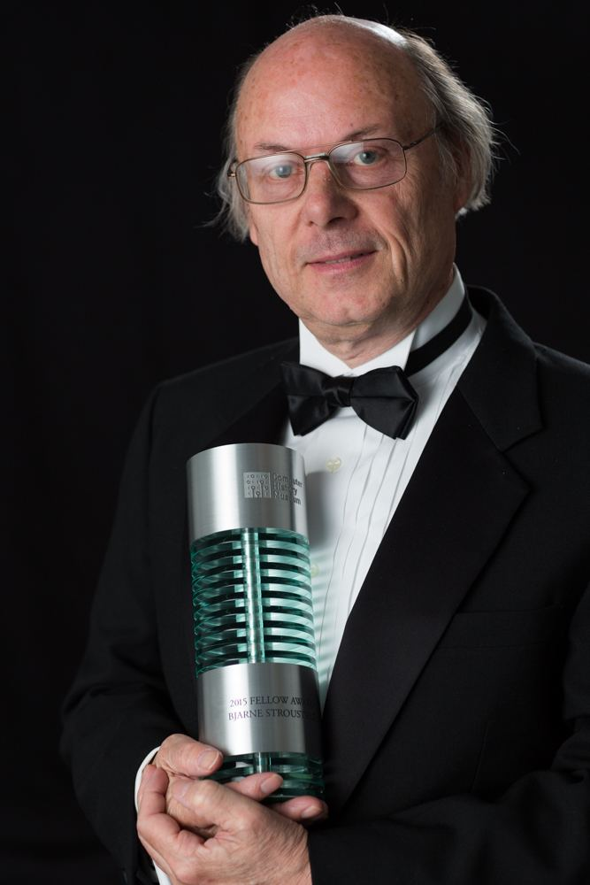

Bjarne Stroustrup, the creator of C++
In 1979, Bjarne Stroustrup, a Danish computer scientist, began work on "C with Classes", the predecessor to C++. The motivation for creating a new language originated from Stroustrup's experience in programming for his Ph.D. thesis. Stroustrup found that Simula had features that were very helpful for large software development, but the language was too slow for practical use, while BCPL was fast but too low-level to be suitable for large software development.
When Stroustrup started working in AT&T Bell Labs, he had the problem of analyzing the UNIX kernel with respect to distributed computing.
Remembering his Ph.D. experience, Stroustrup set out to enhance the C language with Simula-like features.
C was chosen because it was general-purpose, fast, portable and widely used. As well as C and Simula's influences,
other languages also influenced C++, including ALGOL 68, Ada, CLU and ML.

As of 2017, C++ remains the third most popular programming language, behind Java and C.
On January 3, 2018, Stroustrup was announced as the
2018 winner of the Charles Stark Draper Prize for Engineering,
which comes with $500,000, "for conceptualizing and developing the C++ programming language."